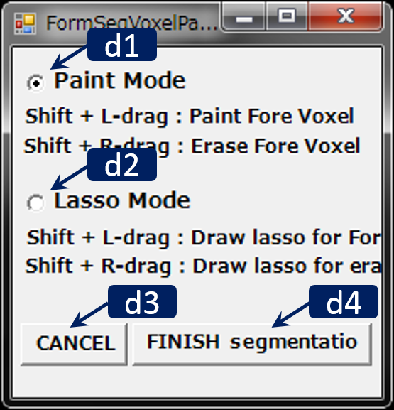

Segmentation Parallel Wires

RoiPainter I/O Visualization Segmentation Download code (github)
Segmentation Parallel Wires
概要: 作成中．
Workflow
- ツールの起動 : "Menu > ModeSwitch > Segmentation Voxel Paint" をクリック.
- +
- +
- +
- 終了し登録 : ダイアログ右下のFinish And Storeをクリック．
Main Windowの操作方法
- マウス L/M/R ドラッグ : 視点の平行移動/ズーム/回転
- マウス ホイール : 切断面の前後移動
- Ctrl + L ドラッグ : 曲面切断面の生成
- Ctrl + L クリック : 曲面切断面の削除
- TODO
- TODO
- TODO
Dialogの操作方法
 d1. TODOd2. TODO
d3. TODO
d4. TODO
d5. TODO